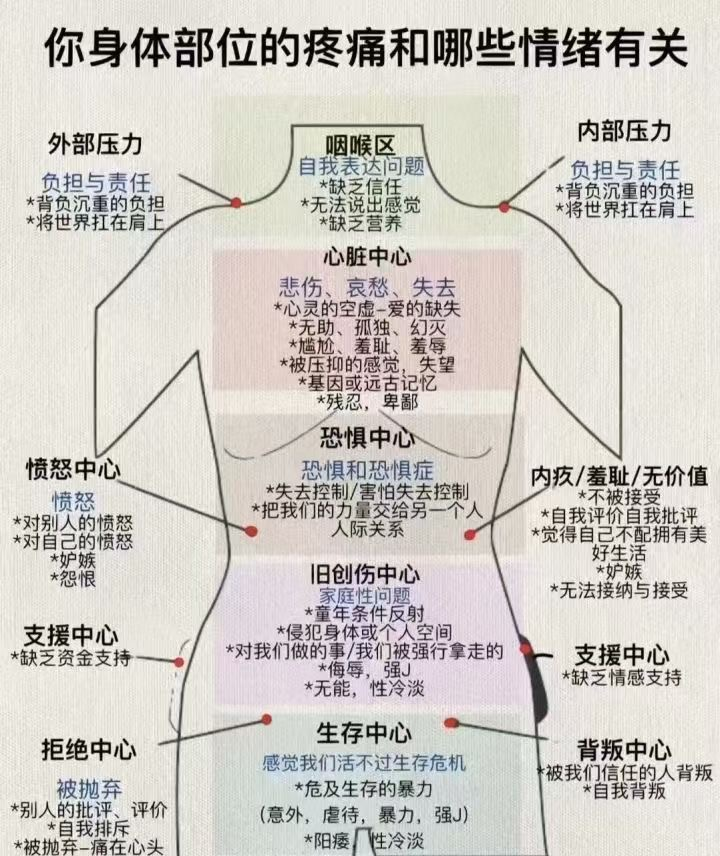

回春明点叩问
回春明点叩问是一种从头面部到背部全身的触摸拍打疗法，主要用于改善血液循环、释放隐藏的情绪以及促进身体的放松和情绪的清理。这种疗法通过刺激末梢神经和特定部位的肌肉，帮助提升身体的自我修复能力和情绪的平衡。在工作坊中，参与者会学习如何运用这些技巧来自我疗愈和释放压力。
身体疼痛与情绪对照
叩问的时候，可以对照这张图看看：身体哪里酸、哪里堵、哪里不舒服，也许正连着某种一直压着没说出口的情绪。拍到那里时多停一会儿，轻轻问问自己。仅作自我觉察参考。

视频
时长 10:28
视频没有加载。请确认「回春明点叩问.mp4」和这个页面放在一起，然后重新打开。
第一遍 · 允许、接纳与释放
随着扣触，开启身体能量……
我全然允许和接纳——我自己、我的某某情绪、我经历的一切遭遇和挫折，以及犯过的错误与遗憾。我全然地爱自己、允许自己、接纳自己，我知道一切都是我成长的必经之路和接受的考验，我全然地爱自己、允许自己、接纳自己的一切，并开始释放所有的负面情绪和负向能量，释放与流动所有积压的负面情绪。
第二遍 · 爱、温暖与链接
随着触碰、开启身体深度能量。
我感受到爱与被爱——我全然地爱自己、也感受到来自身边的爱。我能感受到亲人的爱、爱人的爱、以及一切周围物品和环境给我的温暖和柔软，这一切让我感到温暖和安全。我全然地接纳他们，他们也全然地接纳和欢迎我的存在，我爱一切，一切也爱着我，否则我不会存在。我和身边、环境、宇宙、时空中所有的爱建立链接和流动。
第三遍 · 光、信心与赋能
随着碰触，请开启身体更深层次的能量与功能。
我的手碰触的部位，都开始发光，变得洁白与明亮。身体开始启动深度修复与合一，我的光与星光合一，我的光与周围善与美好的环境与关系合一，我的光与大地深处合一，一切给我赋能，我也赋能给一切。我将带着信心，充满动力地生活与工作，我的信心来自星空、来自大地、来自一切爱与智慧的能量。手碰触的部位，开启洁白明亮的光。